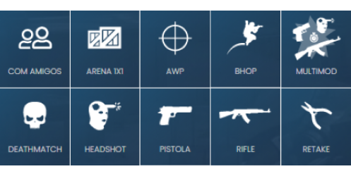
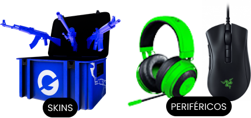
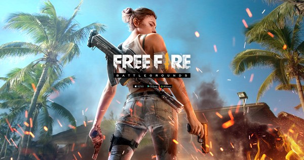

BEM VINDOS AO GAMER DGHIU!
Só jogo malado!.
Home Quem somos Contato Depoimentos Jogos
Fique por dentro das novidades.
  
| Por que ser um gamer? | ◉ Melhora na resolução de problemas | ◉ Melhora a coordenação geral | ◉ Melhora a atenção e concentração | ◉ Desenvolve a memória |
Free Fire: Novo Servidor Avançado Chega em Janeiro
"Arena iniciará o pré-registro para participar do Free Fire Advance Server nos próximos dias, o objetivo principal do Free Fire…"
ver mais
“GANHE” o verificado Free Fire, Banner e avatar Angelical.
Receba um print da sua conta no free fire com o V de verificado, avatar e banner angelical[...]
ver mais
The Wild Update: Conheça os recursos prometidos para o Minecraft 1.19
Warden, sapos e muito mais! Confira com detalhes as novidades anunciadas para o Minecraft 1.19 - The Wild…
ver mais
Servidores 100% focados para você treinar sua mira, aquecer antes de uma partida, praticar jogadas de retake, e diversas outras opções.